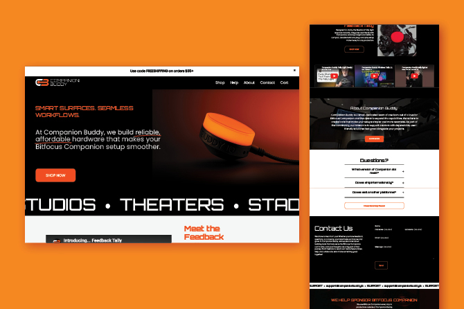
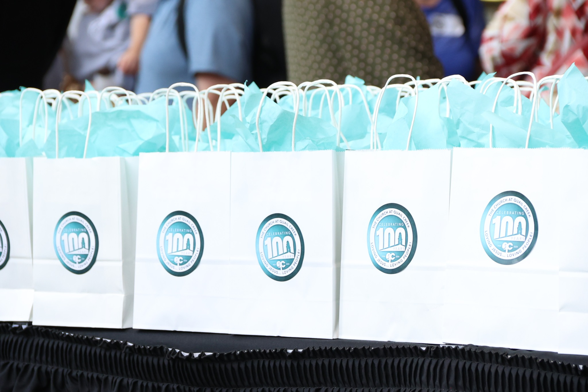
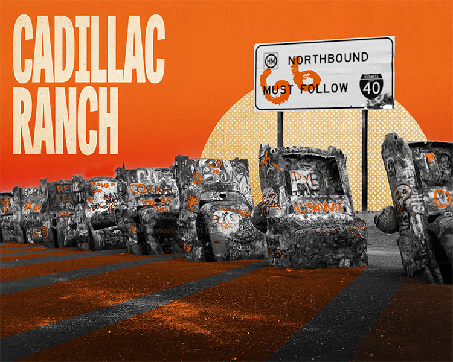
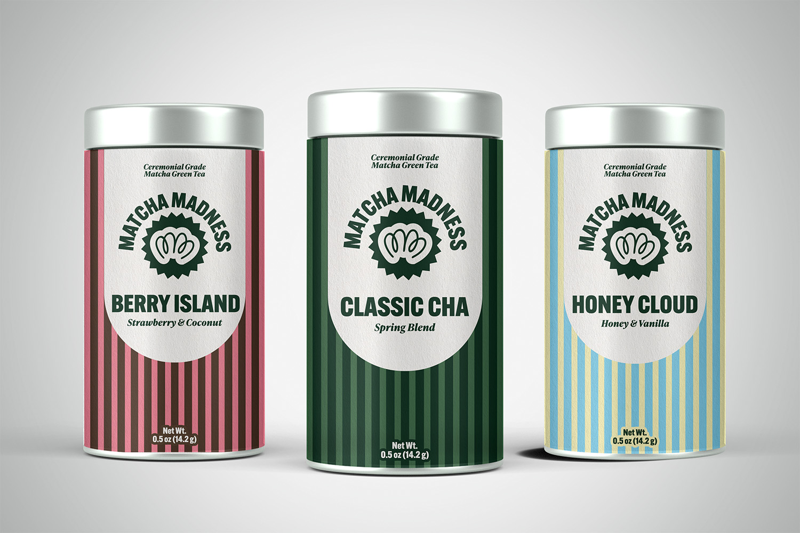
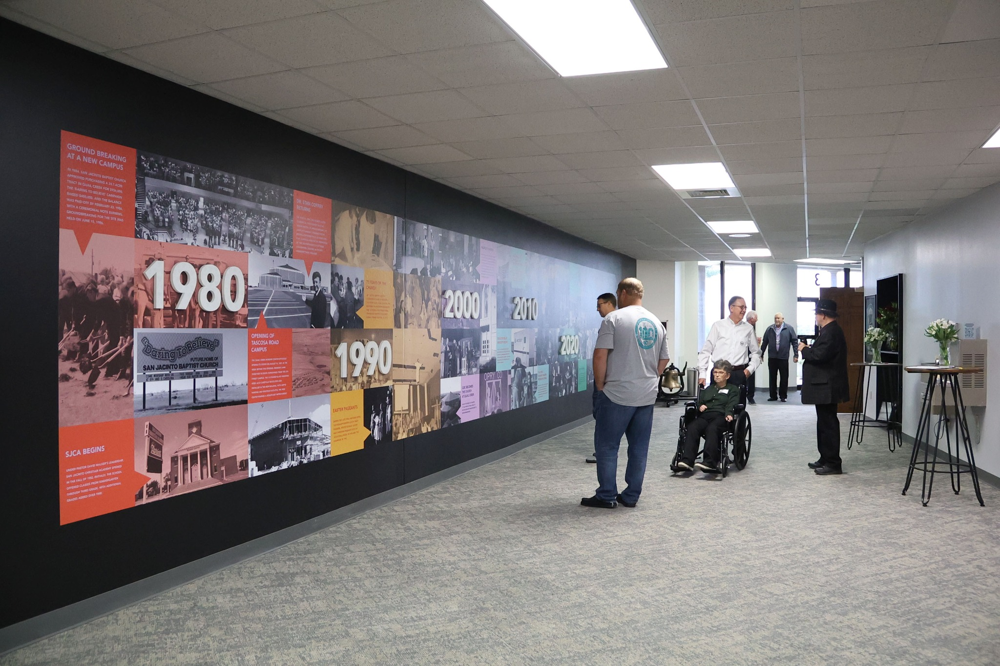
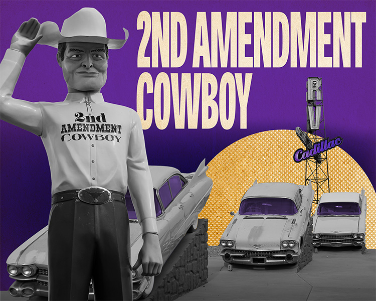
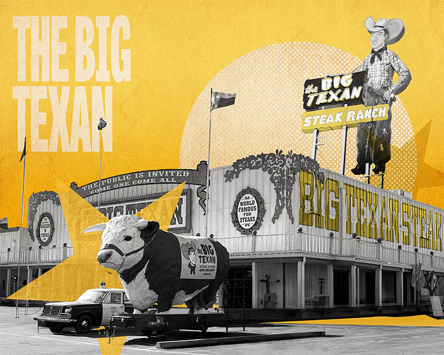
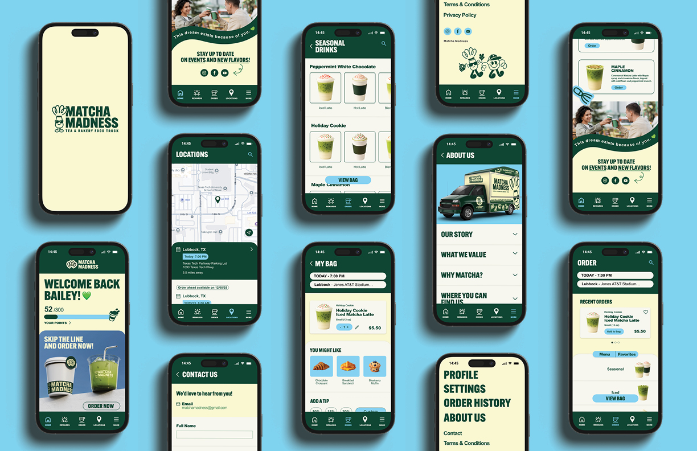

Bailey's Portfolio
Welcome to my portfolio! This collection showcases a range of work created in the classroom, at
work, and in my own creative time including branding, illustration, and digital design.
Enjoy exploring!














